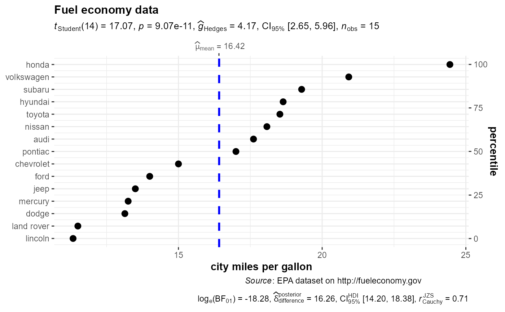

A dot chart with statistical details from one-sample test included in the plot as a subtitle.
ggdotplotstats(data, x, y, summarize = TRUE, xlab = NULL, ylab = NULL, title = NULL, subtitle = NULL, caption = NULL, ggtheme = ggplot2::theme_bw(), ggstatsplot.layer = TRUE)
| data | Dataframe from which variables specified are preferentially to be taken. This argument is optional. |
|---|---|
| x | A numeric variable. |
| y | Label or grouping variable. |
| summarize | Logical that decides whether |
| xlab | Label for |
| ylab | Label for |
| title | The text for the plot title. |
| subtitle | The text for the plot subtitle if you don't want results
from one sample test to be displayed (i.e. |
| caption | The text for the plot caption. |
| ggtheme | A function, |
| ggstatsplot.layer | Logical that decides whether |
